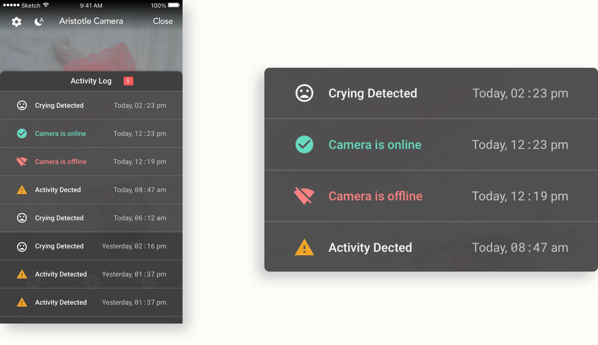

設計目標
基於現有的硬體規格，規劃可行的功能
我在專案中負責的工作
- 分析產品定位
- 規劃功能並安排開發的優先次序
- 製作高擬真的prototypes
設計策略
定義產品最核心的功能（MVP）
1. 理解「監視器」和「嬰兒監控攝影機」的差別
↑ 上圖為美式三房的平面圖。
「監視器」會裝在拍攝範圍最大化的地方，「嬰兒監控攝影機」則安裝在嬰兒床上方，拍攝範圍小。
| 監視器 | 嬰兒監控攝影機 | |
|---|---|---|
| 目的 | 用來監看廣泛的空間，偵查可疑活動並錄製證據 | 主要用來監控孩子的狀態和周圍環境，以確保他們的安全 |
| 視角和焦距 | 涵蓋範圍寬廣深遠 | 涵蓋範圍窄小集中 |
2. 理解新手父母想要透過監視器完成什麼事情（Job to be Done）
↑ 孩子不在身邊時，新手父母的心情會隨之震盪。因此，嬰兒監控攝影機的主要工作就是讓新手父母遠端查看孩子的狀態。
3. 尋找使用流程中最關鍵的環節
↑對使用者來說，取得即時影像是最重要的事。
設計考量
優先處理影像傳輸能力
1. 根據網路狀態自動調整影像品質
↑ 系統會根據網路連線強度自動調整影片解析度，確保影像串流順暢。
2. 預先幫使用者調整攝影機確保體驗順暢
若沒有無線網路，在手機上觀看串連影音可能會產生費用。因此預先關閉下列功能：
- 觀看full HD 1080P影片
- 使用手機流量觀看串流影片
為了避免SD卡損壞或是記憶體不足，預先關閉下列攝影機的功能:
- 連續錄影
- 錄製full HD 1080P影片

↑ 為了防止不可預期的錯誤發生，我們預先關閉一些軟硬體功能，例如：持續錄製高解析度影片。
最終設計
使用者介面


↑ 活動紀錄，如哭聲偵測、攝影機連線狀態，讓家長遠端掌握寶寶的狀況。